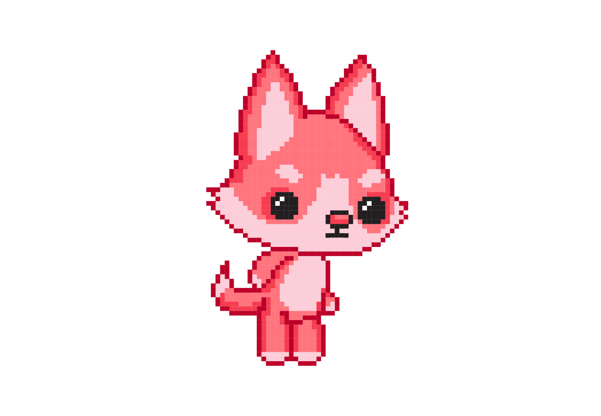
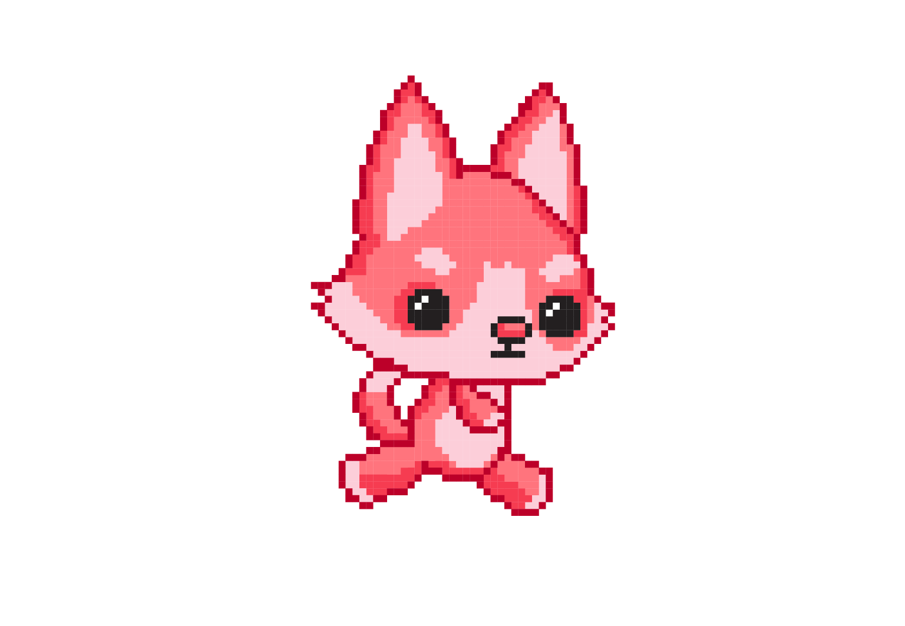
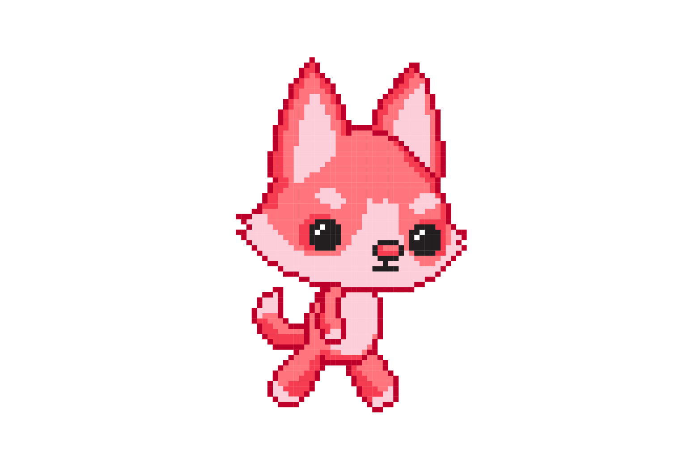
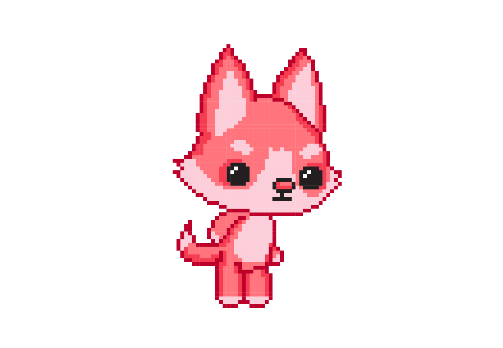
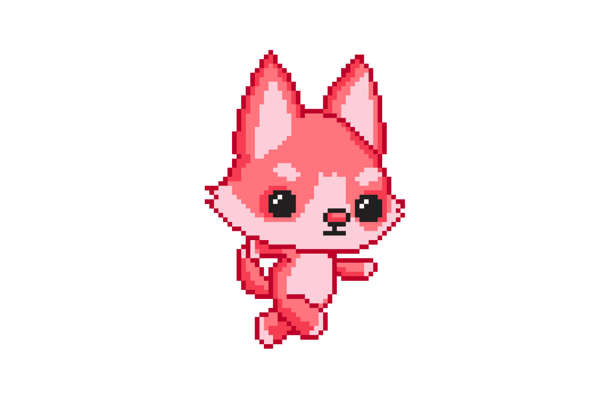
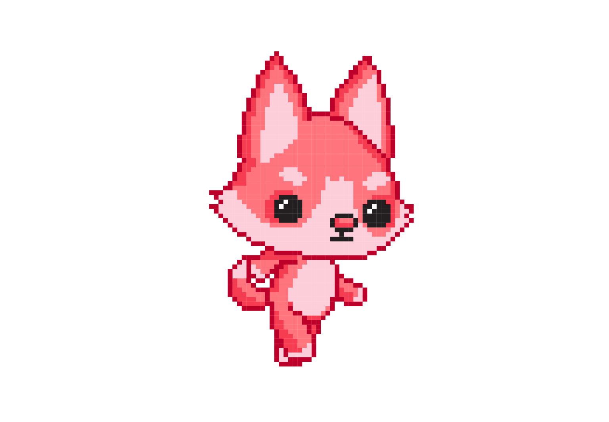
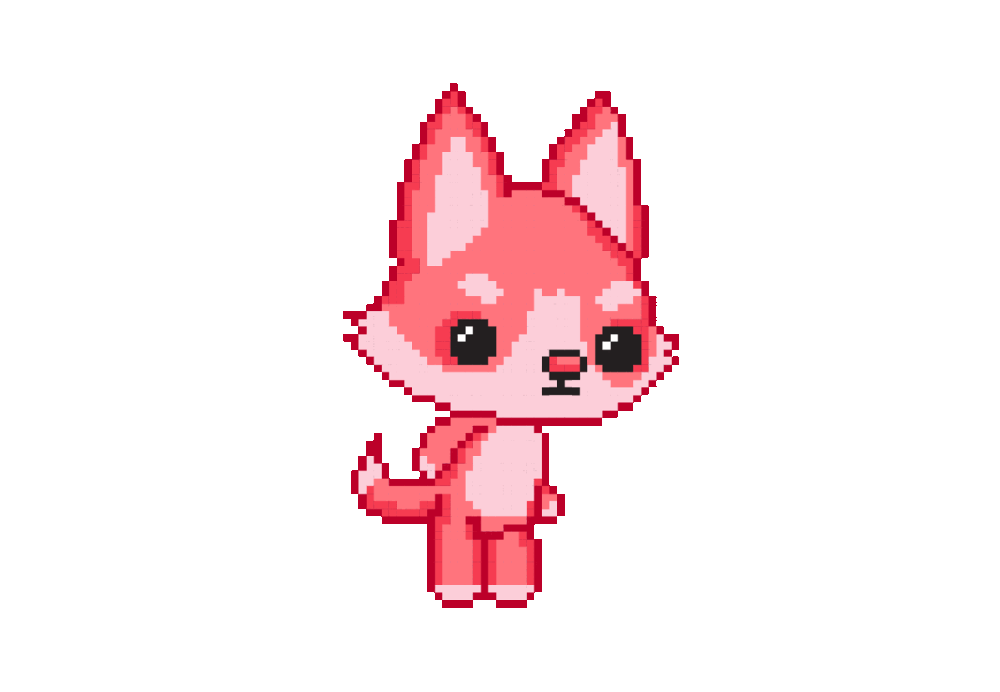

<!DOCTYPE html>
<html xmlns="http://www.w3.org/1999/xhtml" lang="sr-Cyrl"></html>
  <head>
    <meta charset="utf-8" />
    <meta name="viewport" content="width=device-width, initial-scale=1.0" />
<title>Предлог пројекта - С обе ноге у Пајгејму &#8212; Пројектна настава за седми разред - Pygame</title>
    <link rel="stylesheet" href="_static/pygments.css" type="text/css" />
    <link rel="stylesheet" href="_static/basic.css" type="text/css" />
    <link rel="stylesheet" type="text/css" href="_static/activecode.css" />
    <link rel="stylesheet" type="text/css" href="_static/codemirror.css" />
    <link rel="stylesheet" type="text/css" href="_static/qchoice.css" />
    <link rel="stylesheet" type="text/css" href="_static/clickable.css" />
    <link rel="stylesheet" type="text/css" href="_static/pytutor.css" />
    <link rel="stylesheet" type="text/css" href="_static/modal-basic.css" />
    <link rel="stylesheet" type="text/css" href="_static/datafile.css" />
    <link rel="stylesheet" type="text/css" href="_static/dragndrop.css" />
    <link rel="stylesheet" type="text/css" href="_static/fitb.css" />
    <link rel="stylesheet" type="text/css" href="_static/matrixeq.css" />
    <link rel="stylesheet" type="text/css" href="_static/parsons.css" />
    <link rel="stylesheet" type="text/css" href="_static/lib/prettify.css" />
    <link rel="stylesheet" type="text/css" href="_static/poll.css" />
    <link rel="stylesheet" type="text/css" href="_static/showEval.css" />
    <link rel="stylesheet" type="text/css" href="_static/tabbedstuff.css" />
    <link rel="stylesheet" type="text/css" href="https://stackpath.bootstrapcdn.com/bootstrap/4.2.1/css/bootstrap.min.css" />
    <link rel="stylesheet" type="text/css" href="_static/video.css" />
    <link rel="stylesheet" type="text/css" href="_static/webgldemo.css" />
    <link rel="stylesheet" type="text/css" href="_static/webglinteractive.css" />
    <link rel="stylesheet" type="text/css" href="_static/karel.css" />
    <link rel="stylesheet" type="text/css" href="_static/notes.css" />
    <link rel="stylesheet" type="text/css" href="_static/gallery.css" />
    <link rel="stylesheet" type="text/css" href="_static/associations.css" />
    <link rel="stylesheet" type="text/css" href="_static/editor.css" />
    <link rel="stylesheet" href="_static/user-highlights.css" type="text/css" />
    <link rel="stylesheet" href="https://use.fontawesome.com/releases/v5.1.1/css/all.css" type="text/css" />
    <link rel="stylesheet" href="_static/bootstrap-4.0.0-dist/css/bootstrap.min.css" type="text/css" />
    <link rel="stylesheet" href="_static/flatly.min.css" type="text/css" />
    <link rel="stylesheet" href="_static/petlja-runestone.css" type="text/css" />
    <script id="documentation_options" data-url_root="./" src="_static/documentation_options.js"></script>
    <script type="text/javascript" src="_static/runestonebase.js"></script>
    <script type="text/javascript" src="_static/skulpt.min.js"></script>
    <script type="text/javascript" src="_static/skulpt-stdlib.js"></script>
    <script type="text/javascript" src="_static/jquery.js"></script>
    <script type="text/javascript" src="_static/underscore.js"></script>
    <script type="text/javascript" src="_static/doctools.js"></script>
    <script type="text/javascript" src="_static/language_data.js"></script>
    <script type="text/javascript" src="_static/jquery.highlight.js"></script>
    <script type="text/javascript" src="_static/bookfuncs.js"></script>
    <script type="text/javascript" src="_static/codemirror.js"></script>
    <script type="text/javascript" src="_static/xml.js"></script>
    <script type="text/javascript" src="_static/css.js"></script>
    <script type="text/javascript" src="_static/python.js"></script>
    <script type="text/javascript" src="_static/htmlmixed.js"></script>
    <script type="text/javascript" src="_static/javascript.js"></script>
    <script type="text/javascript" src="_static/jquery_i18n/CLDRPluralRuleParser.js"></script>
    <script type="text/javascript" src="_static/jquery_i18n/jquery.i18n.js"></script>
    <script type="text/javascript" src="_static/jquery_i18n/jquery.i18n.messagestore.js"></script>
    <script type="text/javascript" src="_static/jquery_i18n/jquery.i18n.fallbacks.js"></script>
    <script type="text/javascript" src="_static/jquery_i18n/jquery.i18n.language.js"></script>
    <script type="text/javascript" src="_static/jquery_i18n/jquery.i18n.parser.js"></script>
    <script type="text/javascript" src="_static/jquery_i18n/jquery.i18n.emitter.js"></script>
    <script type="text/javascript" src="_static/jquery_i18n/jquery.i18n.emitter.bidi.js"></script>
    <script type="text/javascript" src="_static/activecode-i18n.en.js"></script>
    <script type="text/javascript" src="_static/activecode-i18n.sr-Cyrl.js"></script>
    <script type="text/javascript" src="_static/activecode.js"></script>
    <script type="text/javascript" src="_static/clike.js"></script>
    <script type="text/javascript" src="_static/timed_activecode.js"></script>
    <script type="text/javascript" src="_static/animationbase.js"></script>
    <script type="text/javascript" src="_static/mchoice.js"></script>
    <script type="text/javascript" src="_static/timedmc.js"></script>
    <script type="text/javascript" src="_static/timed.js"></script>
    <script type="text/javascript" src="_static/mchoice-i18n.en.js"></script>
    <script type="text/javascript" src="_static/mchoice-i18n.sr-Cyrl.js"></script>
    <script type="text/javascript" src="_static/clickable.js"></script>
    <script type="text/javascript" src="_static/timedclickable.js"></script>
    <script type="text/javascript" src="_static/d3.v2.min.js"></script>
    <script type="text/javascript" src="_static/jquery.ba-bbq.min.js"></script>
    <script type="text/javascript" src="_static/jquery.jsPlumb-1.3.10-all-min.js"></script>
    <script type="text/javascript" src="_static/pytutor.js"></script>
    <script type="text/javascript" src="_static/codelens.js"></script>
    <script type="text/javascript" src="_static/skulpt.min.js"></script>
    <script type="text/javascript" src="_static/skulpt-stdlib.js"></script>
    <script type="text/javascript" src="_static/datafile.js"></script>
    <script type="text/javascript" src="_static/dragndrop.js"></script>
    <script type="text/javascript" src="_static/timeddnd.js"></script>
    <script type="text/javascript" src="_static/dragndrop-i18n.en.js"></script>
    <script type="text/javascript" src="_static/dragndrop-i18n.sr-Cyrl.js"></script>
    <script type="text/javascript" src="_static/fitb.js"></script>
    <script type="text/javascript" src="_static/timedfitb.js"></script>
    <script type="text/javascript" src="_static/fitb-i18n.en.js"></script>
    <script type="text/javascript" src="_static/fitb-i18n.sr-Cyrl.js"></script>
    <script type="text/javascript" src="_static/matrixeq.js"></script>
    <script type="text/javascript" src="_static/lib/prettify.js"></script>
    <script type="text/javascript" src="_static/lib/hammer.min.js"></script>
    <script type="text/javascript" src="_static/parsons.js"></script>
    <script type="text/javascript" src="_static/parsons-i18n.en.js"></script>
    <script type="text/javascript" src="_static/parsons-i18n.sr-Cyrl.js"></script>
    <script type="text/javascript" src="_static/timedparsons.js"></script>
    <script type="text/javascript" src="_static/poll.js"></script>
    <script type="text/javascript" src="_static/reveal.js"></script>
    <script type="text/javascript" src="_static/shortanswer.js"></script>
    <script type="text/javascript" src="_static/timed_shortanswer.js"></script>
    <script type="text/javascript" src="_static/showEval.js"></script>
    <script type="text/javascript" src="_static/tabbedstuff.js"></script>
    <script type="text/javascript" src="_static/runestonevideo.js"></script>
    <script type="text/javascript" src="_static/webglinteractive.js"></script>
    <script type="text/javascript" src="_static/FileSaver.min.js"></script>
    <script type="text/javascript" src="_static/Blob.js"></script>
    <script type="text/javascript" src="_static/karelCorner.js"></script>
    <script type="text/javascript" src="_static/karelRobot.js"></script>
    <script type="text/javascript" src="_static/karelWorld.js"></script>
    <script type="text/javascript" src="_static/karelChat.js"></script>
    <script type="text/javascript" src="_static/karelRobotDrawer.js"></script>
    <script type="text/javascript" src="_static/karelUI.js"></script>
    <script type="text/javascript" src="_static/karel.js"></script>
    <script type="text/javascript" src="_static/karel-i18n.en.js"></script>
    <script type="text/javascript" src="_static/karel-i18n.sr-Cyrl.js"></script>
    <script type="text/javascript" src="_static/notes.js"></script>
    <script type="text/javascript" src="_static/pygamelib-init.js"></script>
    <script type="text/javascript" src="_static/gallery.js"></script>
    <script type="text/javascript" src="_static/associations.js"></script>
    <script type="text/javascript" src="_static/associations-i18n.en.js"></script>
    <script type="text/javascript" src="_static/associations-i18n.sr-Cyrl.js"></script>
    <script type="text/javascript" src="_static/editor.js"></script>
    <script type="text/javascript" src="_static/jszip.js"></script>
    <script type="text/javascript" src="_static/editor-i18n.en.js"></script>
    <script type="text/javascript" src="_static/editor-i18n.sr-Cyrl.js"></script>
    <script type="text/javascript" src="_static/translations.js"></script>
    <script async="async" type="text/javascript" src="https://cdnjs.cloudflare.com/ajax/libs/mathjax/2.7.5/latest.js?config=TeX-AMS-MML_HTMLorMML"></script>
    <script type="text/javascript" src="_static/jquery-ui-1.10.3.custom.min.js"></script>
    <script type="text/javascript" src="_static/jquery-fix.js"></script>
    <script type="text/javascript" src="_static/bootstrap-4.0.0-dist/js/bootstrap.min.js"></script>
    <script type="text/javascript" src="_static/bootstrap-4.0.0-dist/js/bootstrap.bundle.min.js"></script>
    <script type="text/javascript" src="_static/bootstrap-sphinx.js"></script>
    <script type="text/javascript" src="_static/waypoints.min.js"></script>
    <script type="text/javascript" src="_static/rangy-core.js"></script>
    <script type="text/javascript" src="_static/rangy-textrange.js"></script>
    <script type="text/javascript" src="_static/rangy-cssclassapplier.js"></script>
    <script type="text/javascript" src="_static/user-highlights.js"></script>
    <script type="text/javascript" src="_static/jquery.idle-timer.js"></script>
    <script type="text/javascript" src="_static/processing-1.4.1.min.js"></script>
    <script type="text/javascript" src="_static/jquery.hotkey.js"></script>
    <script type="text/javascript" src="_static/jquery-migrate-1.2.1.min.js"></script>
    <script type="text/javascript" src="_static/petlja_ruenstone.js"></script>
    <link rel="index" title="Index" href="genindex.html" />
    <link rel="search" title="Search" href="search.html" />
    <link rel="prev" title="Предлог пројекта - Smart art" href="geometrija.html" />
    <meta charset='utf-8'>
    <meta http-equiv='X-UA-Compatible' content='IE=edge,chrome=1'>
    <meta content='width=device-width, initial-scale=1.0, maximum-scale=1.0, user-scalable=0' name='viewport' />
    <script type="text/javascript">
      eBookConfig = {};
      eBookConfig.host = 'http://127.0.0.1:8000' ? 'http://127.0.0.1:8000' : 'http://127.0.0.1:8000';
      eBookConfig.app = eBookConfig.host + '/runestone';
      eBookConfig.ajaxURL = eBookConfig.app + '/ajax/';
      eBookConfig.course = 'Projektni_Pygame';
      eBookConfig.logLevel = '0';
      eBookConfig.loginRequired = 'false';
      eBookConfig.build_info = "";
      eBookConfig.isLoggedIn = false;
      eBookConfig.useRunestoneServices = false;
      eBookConfig.python3 = true;
      eBookConfig.basecourse = 'Projektni_Pygame';
      eBookConfig.runestone_version = '';
      eBookConfig.imagesDir = '_images/';
      eBookConfig.staticDir = '_static/';
      if (typeof (Sk) != "undefined")
        Sk.imgPath = eBookConfig.imagesDir;
    </script>

  </head><body>


<!-- Begin navbar -->

<nav id="navbar" class="navbar navbar-default navbar-fixed-top" role="navigation">

  <div class="container">

    <div class="navbar-header" style="width: 10%;margin-top: 20px;">
      <button type="button" class="navbar-toggle collapsed" data-toggle="collapse" data-target="#bs-example-navbar-collapse-1">
        <span class="sr-only">Toggle navigation</span>
        <span class="icon-bar"></span>
        <span class="icon-bar"></span>
        <span class="icon-bar"></span>
      </button>
      
    </div>

    <div class="collapse navbar-collapse" id="bs-example-navbar-collapse-1" style="margin-top: 10px; margin-left: 25px;">
      <ul class="nav navbar-nav " style="width: 90%;">
        <li class="active"><a style="text-align: center;" href="./">Пројектна настава за седми разред - Pygame</a></li>
      </ul>
    </div>
  </div>
</nav>


<div class="container col-md-12" id="continue-reading"></div>

<div class="container col-md-8 col-md-offset-2" id="main-content" style="margin-top: 100px;">
  
  <div class="section" id="id1">
<h1>Предлог пројекта - С обе ноге у Пајгејму<a class="headerlink" href="#id1" title="Permalink to this headline">¶</a></h1>
<div class="section" id="id2">
<h2>Скок у Пајгејм<a class="headerlink" href="#id2" title="Permalink to this headline">¶</a></h2>
<p>Завршивши курс на Петљи посвећен Пајгејму направио/направила си први корак ка прављењу рачунарских игрица. Да би сутра правио/правила игрице, било је прво потребно да направиш мале кораке у том правцу учећи о координатама, употреби петљи и цртању неких облика. Међутим, у курсу који си завршио/завршила само си загребао/загребала по површини онога што Пајгејм има да понуди.</p>
<p>Идеја овог пројекта је да ти помогне да направиш следећи корак у учењу Пајгејма и да вас уведе у свет анимације.</p>
<p>Вероватно већ знаш да цртани филм настаје тако што се на екрану брзо смењују сличице, при чему је свака следећа слика веома слична претходној (ликови на слици су само мало померени у односу на претходни положај).</p>
<p>На пример, од наредних осам сличица лика у различитим положајима:</p>
<a class="reference internal image-reference" href="_images/liktrci1.png"></a>
<a class="reference internal image-reference" href="_images/liktrci2.png"></a>
<a class="reference internal image-reference" href="_images/liktrci3.png"></a>
<a class="reference internal image-reference" href="_images/liktrci4.png"></a>
<a class="reference internal image-reference" href="_images/liktrci5.png"></a>
<a class="reference internal image-reference" href="_images/liktrci6.png"></a>
<a class="reference internal image-reference" href="_images/liktrci7.png"></a>
<a class="reference internal image-reference" href="_images/liktrci8.png"></a>
<p>настаје следећа анимација трчања:</p>
<a class="reference internal image-reference" href="_images/liktrci.gif"></a>

    <div class="note-wrapper infonote-type">
        <div class="note-icon-holder"> </div>
         
        <div class="course-content">
            
<p>Циљ овог пројекта био би да напишеш програм којим ћеш направити неку анимацију помоћу библиотеке Пајгејм.</p>

    </div></div>
</div>
<div class="section" id="id3">
<h2>Анализа и планирање<a class="headerlink" href="#id3" title="Permalink to this headline">¶</a></h2>
<p>Први изазов овог пројекта биће да разумеш како анимације раде и како се уопште оне програмирају у Пајгејму. Не брини, ово није много компликовано, али захтеваће мало труда и припреме пре него што почнеш да самостално програмираш.</p>
<p>Да би могао/могла да урадиш овај пројекат и да би се упознао/упознала са анимацијама у Пајгејму, биће потребно да прочиташ додатну лекцију из нашег приручника <a class="reference external" href="https://petlja.org/biblioteka/r/lekcije/pygame-prirucnik/animacije-cas11">Програмирање графике помоћу Pygame</a>. Не брини, испод ћемо ти навести и тачне поднаслове те лекција које је потребно да прочиташ како би могао/могла да правиш оно што желиш.</p>
<p>Када то урадиш, предстоји ти још један велики корак, а то је одабир тога шта ћеш анимирати. Биће потребно да изабереш слике које желиш да анимираш и да видиш са којим циљем то уопште желиш да урадиш. Да ли желиш да направиш анимацију кретања облака у временској прогнози, да ли желиш да направиш нешто што ће личити на цртаћ, да ли желиш да направиш нешто што ће личити на рачунарску игрицу - то су питања која треба себи да поставиш пре него што кренеш са радом.</p>
<p>Када одлучите шта желиш да анимираш, биће потребно да пронађеш или направиш одговарајуће фајлове. Посебно занимљиво би могло да буде ако би пробао/пробала да направиш сопствене ликове које желиш да анимираш. Ако ти цртање није јача страна, можда можеш да пројекат урадиш са неким другаром/другарицом који ће ти помоћи у дизајну сопствених ликова, слика и осталих елемената анимације коју ћеш/ћете направити.</p>
<div class="section" id="id4">
<h3>Ресурси<a class="headerlink" href="#id4" title="Permalink to this headline">¶</a></h3>
<p>За овај пројекат најважније ће бити да прво прочиташ следеће делове нашег Приручника:
- <a class="reference external" href="https://petlja.org/biblioteka/r/lekcije/pygame-prirucnik/animacije-cas11#id2">https://petlja.org/biblioteka/r/lekcije/pygame-prirucnik/animacije-cas11#id2</a>
- <a class="reference external" href="https://petlja.org/biblioteka/r/lekcije/pygame-prirucnik/animacije-cas11#id4">https://petlja.org/biblioteka/r/lekcije/pygame-prirucnik/animacije-cas11#id4</a>
- <a class="reference external" href="https://petlja.org/biblioteka/r/lekcije/pygame-prirucnik/animacije-cas11#id7">https://petlja.org/biblioteka/r/lekcije/pygame-prirucnik/animacije-cas11#id7</a>
- <a class="reference external" href="https://petlja.org/biblioteka/r/lekcije/pygame-prirucnik/animacije-cas11#id9">https://petlja.org/biblioteka/r/lekcije/pygame-prirucnik/animacije-cas11#id9</a>
- <a class="reference external" href="https://petlja.org/biblioteka/r/lekcije/pygame-prirucnik/animacije-cas11#id15">https://petlja.org/biblioteka/r/lekcije/pygame-prirucnik/animacije-cas11#id15</a></p>
<p>Ако желиш да твој пројекат садржи и анимације кретања препоручујемо да погледаш и ова поглавља:
- <a class="reference external" href="https://petlja.org/biblioteka/r/lekcije/pygame-prirucnik/animacije-cas11#id8">https://petlja.org/biblioteka/r/lekcije/pygame-prirucnik/animacije-cas11#id8</a>
- <a class="reference external" href="https://petlja.org/biblioteka/r/lekcije/pygame-prirucnik/animacije-cas12#id2">https://petlja.org/biblioteka/r/lekcije/pygame-prirucnik/animacije-cas12#id2</a></p>
<p>И након тога урадиш задатке у овом поглављу <a class="reference external" href="https://petlja.org/biblioteka/r/lekcije/pygame-prirucnik/animacije-cas12">https://petlja.org/biblioteka/r/lekcije/pygame-prirucnik/animacije-cas12</a></p>
</div>
<div class="section" id="id5">
<h3>Код за анимацију<a class="headerlink" href="#id5" title="Permalink to this headline">¶</a></h3>
<p>Ако си прочитао/прочитала све што смо ти препоручили, пробај да анализираш следећи код. Твој код ће вероватно изгледати слично као и овај. Овде смо ти дали један могућ пример тога како се прави анимација, али очекујемо да ћеш, ако се одлучиш за овај пројекат, сигурно изабрати занимљивије слике, позадине, ликове и сл.</p>
<p>Обрати посебну пажњу на начин на који су слике укључене у код и на начин на који се слике смењују у анимацији. Обрати пажњу како је упторебљена листа и како је касније у функцији за нови фрејм укључена одговарајућа слика.</p>
<p>Посебну пажњу обрати како је упторебљено спајање стрингова у називу слике.</p>

<div data-childcomponent="crtani_film" class="course-box course-box-problem course-content">

<textarea data-component="activecode" id=crtani_film data-lang="python" 
      data-timelimit=25000    
    data-audio=''   
           data-playtask="true"   data-modaloutput="true" data-hidehistory=true
      data-includexsrc="# -*- acsection: general-init -*-
import pygame as pg
import pygamebg

(sirina, visina) = (150, 180)  # otvaramo prozor
prozor = pygamebg.open_window(sirina, visina, &quot;Animacija&quot;)

sredina_y = visina / 2

# -*- acsection: main -*-

# učitavamo u listu slike setanje1.png, setanje2.png, ..., setanje5.png
slike = []   # niz u koji dodajemo slike
for i in range(1, 6):
    naziv_slike = &quot;setanje&quot; + str(i) + &quot;.png&quot;  # gradimo naziv slike od delova
    slike.append(pg.image.load(naziv_slike))   # učitavamo sliku i dodajemo je na kraj niza

slika = 0  # indeks tekuće slike

def crtaj():
    prozor.fill(pg.Color(&quot;white&quot;))     # bojimo pozadinu prozora u belo
    prozor.blit(slike[slika], (0, 0))  # prikazujemo sliku

def novi_frejm():
    global slika  # ovu globalnu promenljivu menjamo
    slika = (slika + 1) % len(slike)  # prelazimo na sledeću sliku
    crtaj() # ponovo crtamo scenu

# -*- acsection: after-main -*-

# animacija poziva funkciju novi frejm 5 puta u sekundi
pygamebg.frame_loop(1, novi_frejm)
" data-enablecopy="true">
# učitavamo u listu slike setanje1.png, setanje2.png, ..., setanje5.png
slike = []   # niz u koji dodajemo slike
for i in range(1, 6):
    naziv_slike = "setanje" + str(i) + ".png"  # gradimo naziv slike od delova
    slike.append(pg.image.load(naziv_slike))   # učitavamo sliku i dodajemo je na kraj niza

slika = 0  # indeks tekuće slike

def crtaj():
    prozor.fill(pg.Color("white"))     # bojimo pozadinu prozora u belo
    prozor.blit(slike[slika], (0, 0))  # prikazujemo sliku

def novi_frejm():
    global slika  # ovu globalnu promenljivu menjamo
    slika = (slika + 1) % len(slike)  # prelazimo na sledeću sliku
    crtaj() # ponovo crtamo scenu
</textarea>
</div>
<p>Размисли о томе како би унапредио/унапредила овај код. Шта би још додао/додала?</p>
<p>Размишљај о томе да додаш неку позадину твом пројекту као и о томе да можеш да анимираш више ствари од само једног лика који се креће. Размишљај о томе да ли евнетуално желиш да твојим анимацијама додаш и кретање објеката по екрану.</p>
</div>
</div>
<div class="section" id="id6">
<h2>Самоевалуација<a class="headerlink" href="#id6" title="Permalink to this headline">¶</a></h2>
<p>Када направиш програм, покушај да (пре свега себи) одговориш на ова питања:</p>
<ul class="simple">
<li><p>Да ли је, по твојој процени, пројекат успешно приведен крају? Колико си ти лично задовољан-задовољна урађеним? Зашто?</p></li>
<li><p>Који део је био посебно тежак? Како си га решио-решила? Да ли је постојао неки проблем чијим решавањем се посебно поносиш?</p></li>
<li><p>Да ли је било накнадних измена првобитног плана? Због чега?</p></li>
<li><p>Да ли је пројекат био користан за стицање или унапређивање неких знања или вештина? Којих?</p></li>
</ul>
<p>Размисли шта од овога би било интересантно другима да чују током твог представљања пројекта.</p>
</div>
</div>


  
      <div class="col-md-12">
<ul class="pager">
        <li id="relations-prev" title='Previous chapter - Предлог пројекта - <em>Smart art</em>' data-toggle="tooltip"><a href="geometrija.html">Претходно поглавље</a></li>
    
</ul>

<!-- <ul class="pager"> -->
    <!-- -->
        <!-- <li id="relations-prev" title='Претходно поглавље - Предлог пројекта - <em>Smart art</em>' data-toggle="tooltip"><a href="geometrija.html">Претходно поглавље</a></li> -->
    <!--  -->
    <!-- -->
<!-- </ul> -->

<script type="text/javascript">

  $('#relations-prev').tooltip({'placement':'right', 'selector': '', 'delay': { show: 100, hide: 50}});
  $('#relations-next').tooltip({'placement':'left', 'selector': '', 'delay': { show: 100, hide: 50}});

</script>
</div>
  
</div>
<footer class="footer col-md-12">
    <div class="container">
        <div class="text-center">
            <hr>
            <p class="text-muted">
                <span class="pull-left">&copy; 2022 Petlja (Created using  <a href="https://pypi.org/project/Sphinx/">Swinx</a>, <a href="http://runestoneinteractive.org/">RunestoneComponents</a> and <a href="https://github.com/Petlja/PetljaDoc">PetljaDoc</a>)</span>
            </p>
        </div>
    </div>
</footer>


<script type="text/javascript">
  var _gaq = _gaq || [];
  _gaq.push(['_setAccount', 'UA-32029811-1']);
  _gaq.push(['_trackPageview']);

  (function() {
    var ga = document.createElement('script'); ga.type = 'text/javascript'; ga.async = true;
    ga.src = ('https:' == document.location.protocol ? 'https://ssl' : 'http://www') + '.google-analytics.com/ga.js';
    var s = document.getElementsByTagName('script')[0]; s.parentNode.insertBefore(ga, s);
  })();
</script>


  </body>
</html>